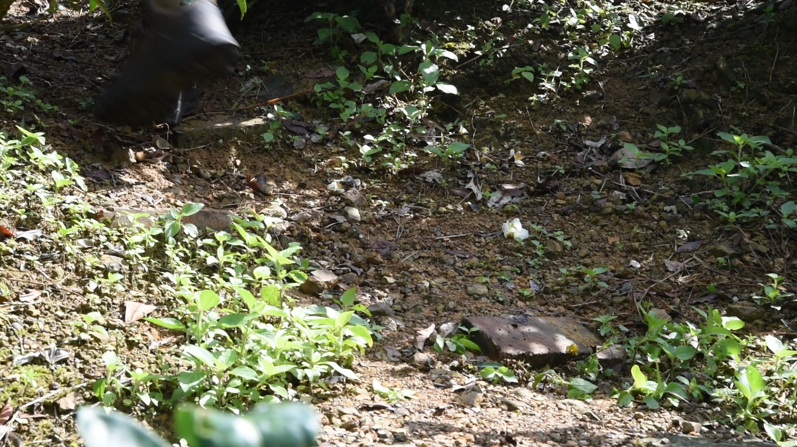
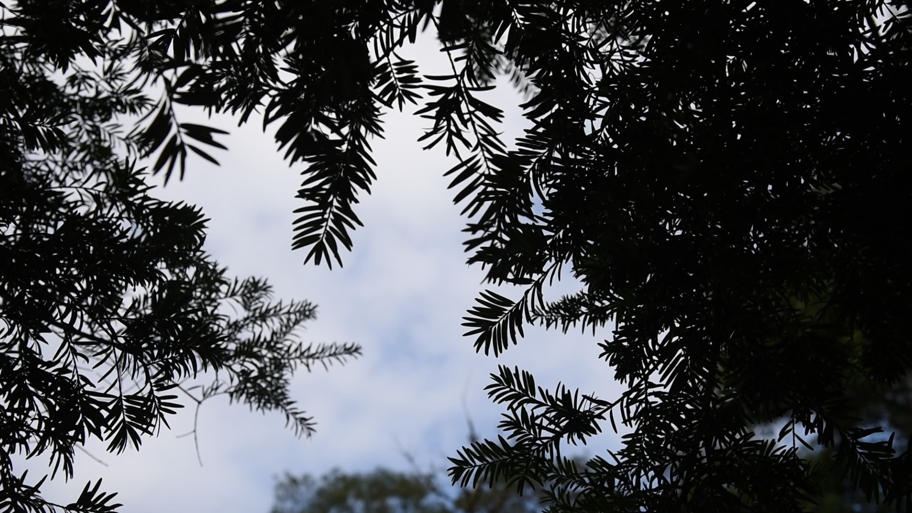
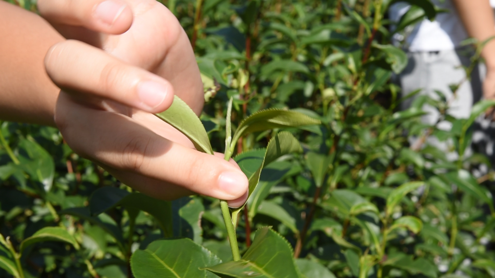
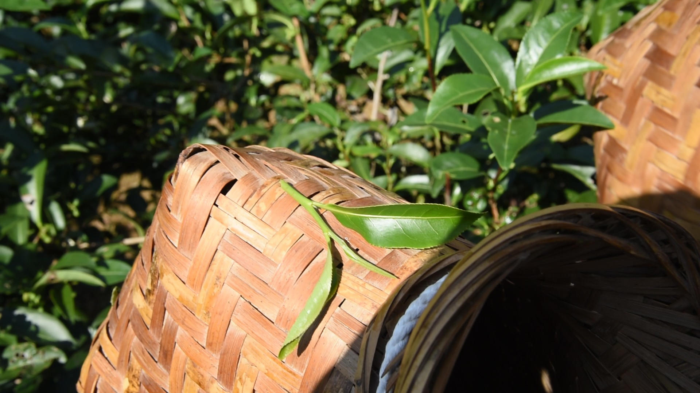

Image unavailable
走路聲
01 / RHYTHM採集行走時的腳步聲。踩踏石頭時呈現類似大鼓的低沉聲響，踩踏草堆時則帶有類似小鼓的輕快質感。
前往聆聽聆聽坪林的聲音，探索相褒歌的音樂元素。

採集行走時的腳步聲。踩踏石頭時呈現類似大鼓的低沉聲響，踩踏草堆時則帶有類似小鼓的輕快質感。
前往聆聽
採集自坪林山區的自然環境音，包含蟲鳴與鳥叫，呈現山林環境的自然氛圍。
前往聆聽採集自坪林河流的流水聲，經過聲音處理，進一步強化水流的質感與層次。
前往聆聽
採集採摘茶葉時的聲音，經由聲音轉化，呈現類似鈸的清脆質感。
前往聆聽
模擬採茶過程中，竹簍移動並掃過茶葉時所產生的摩擦聲，呈現細緻的自然律動。
前往聆聽